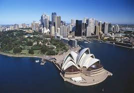

Sydney is the state capital of New South Wales and the most populous city in Australia and Oceania. Located on Australia's east coast, the metropolis surrounds the world's largest natural harbour, and sprawls towards the Blue Mountains to the west.
Source: Wikipedia